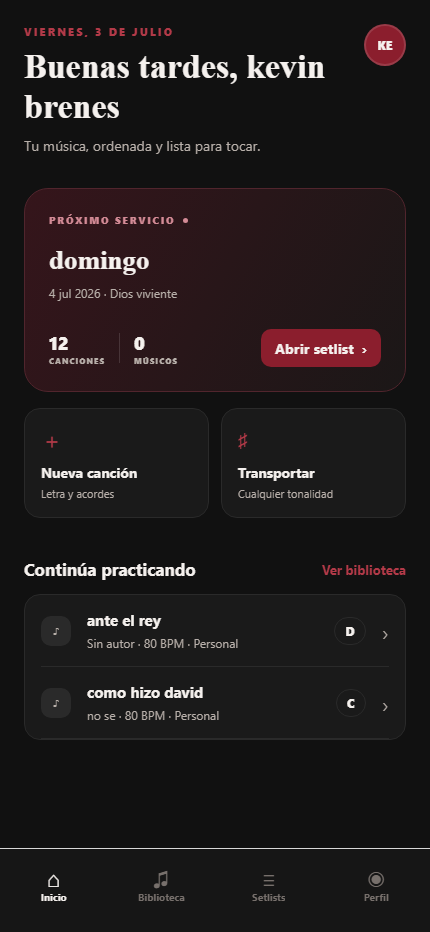

Antes del primer acorde
Espera…
Creo que esa no era la última.
¿Cuál sigue?
¿En qué tono quedó?
¿Quién tiene la buena?
Denme un minuto…
SeguirEl ensayo todavía no empieza.
Pero la música ya dejó de ser lo importante.
La música merece volver a ocupar el centro.
Aurelis
Que tu ensayo empiece haciendo música. No buscando archivos.
Aurelis reúne canciones, programas y materiales para que cada músico llegue preparado antes del primer acorde.
